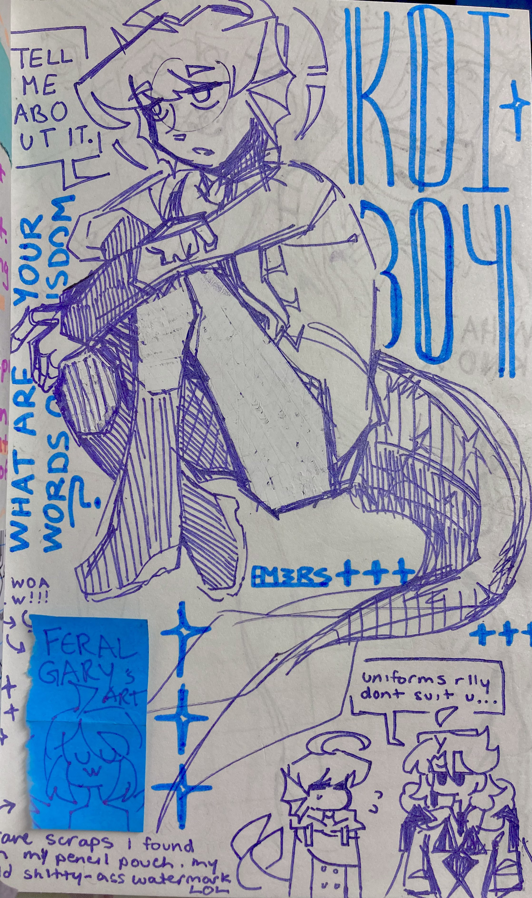

koiboi
creation date: january?
character featured: enzo [& otis, bottom right corner]
this page spread was around the time where i decided, fuck it, i wanna be looser with my sketchbook. it took finding other artists with messier, more "expressionist" styles for me to really be OK with making a mess outta mine too.
i went into this one without a sketch & basically free-handed everything. & turns out, i enjoy that proccess wayyyy better than the process of purposeful lineart. also truns out i like gel pens - the tacky kind that drip a little and the ones that are rough on your paper.

heheh also while i was drawing this, i'd found an old watermark i used in 2019 when i was still posting art for the danplan fandom (rest in peace). "FERAL GARY" lmao i miss that place sm u dont even know.
i taped it in my sketchbook for good measure, didn't wanna lose this ancient relic